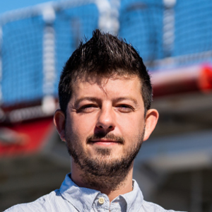
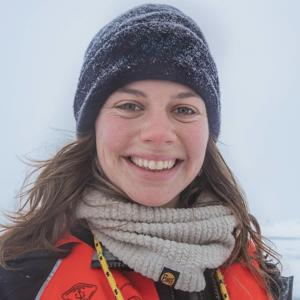
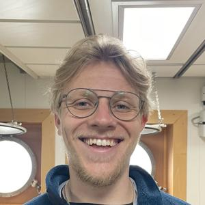
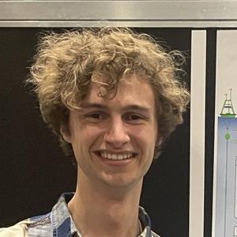
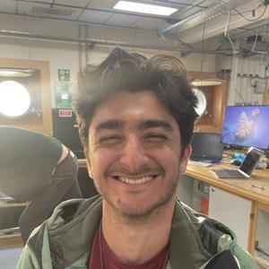
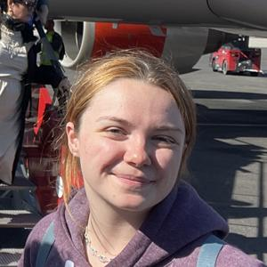
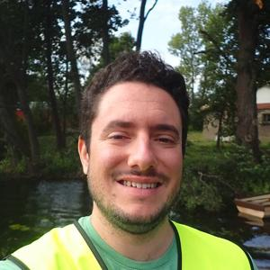

Research group members and collaborators

Senior Research Scientist
Research Scientist

Research Scientist
Assistant Research Scientist

PhD Student (2024 - Present)
University of Southampton

PhD Student (2024 - Present)
University of Southampton

PhD Student (2026 - Present)
University of Southampton

PhD Student (2025 - Present)
University of Southampton
PhD, 2023
"The role of river flow in regulating ocean acidification in Belizean Coastal waters"
University of Southampton
Currently: Postdoctoral Researcher at Heriot-Watt University

MPhil, 2022
"Contributing factors to uncertainty in particulate organic carbon flux attenuation"
University of Southampton
Currently: PhD Student at University of Helsinki
MSc, 2018
"Temporal evolution of the interior carbon stocks in South Georgia"
University of Southampton
Currently: Staff Data Engineer at Marks and Spencer